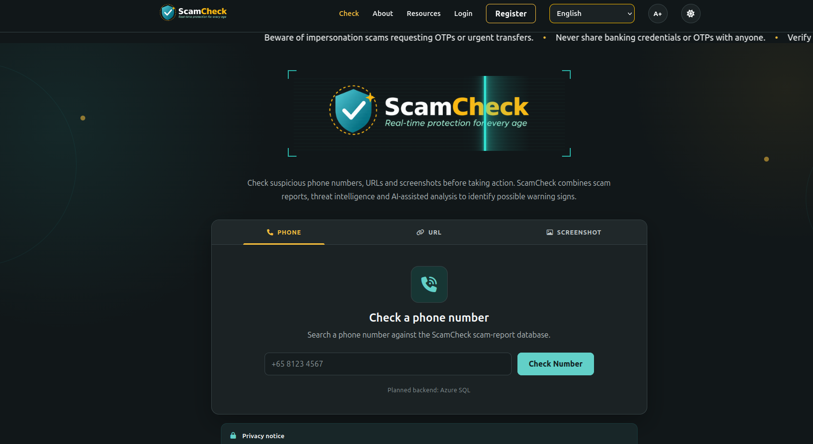
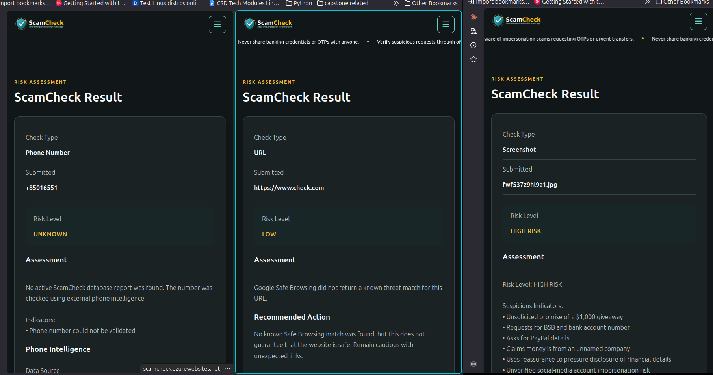
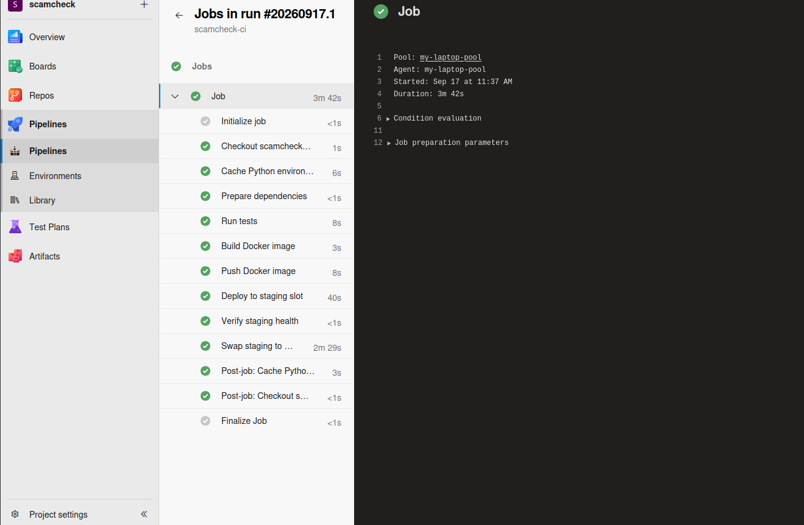
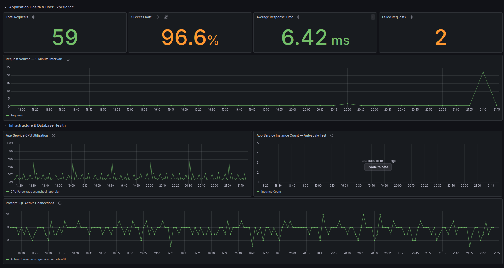
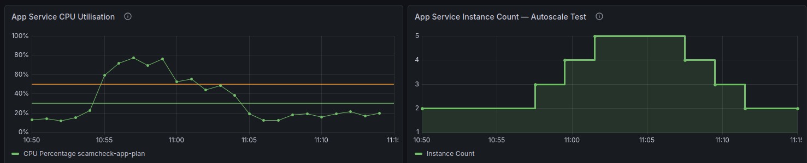

PROJECT 01 / CAPSTONE
ScamCheck
A cloud-based web application that helps users assess suspicious URLs, phone numbers and screenshots for potential scam indicators.
OVERVIEW
The problem
Scam messages can arrive through different channels and often contain suspicious links, phone numbers or screenshots of conversations. Checking each of these separately can make it difficult for users to quickly assess potential warning signs.
ScamCheck was developed as a Cloud and DevOps capstone project to provide a centralised platform where different types of suspicious content can be analysed through a single web application.
The project combines application development with cloud infrastructure, security, CI/CD, monitoring and scalability, providing an end-to-end implementation rather than focusing only on the application itself.

SOLUTION
The application
ScamCheck is a Flask web application that combines multiple scanning methods into a single platform. Users can submit suspicious URLs, phone numbers or screenshots and receive a risk assessment together with detected indicators and recommended actions.
Authentication and scan history provide users with access to previous results, while administrative functionality supports the management of application resources and flagged information.
Suspicious URLs are checked using Google Safe Browsing and the result is presented in a user-friendly format.
Phone numbers can be checked for information that may help users identify potentially suspicious callers.
AI-assisted analysis examines uploaded screenshots for potential scam indicators and suspicious content.
Authenticated users can review their previous scan activity and results.

ARCHITECTURE
Designing the cloud solution
The cloud architecture is based primarily on managed Azure platform services, reducing the need to manage underlying servers and operating systems while allowing greater focus on the application and its deployment.
The Flask application runs as a Docker container on Azure App Service. Persistent application data is stored in Azure Database for PostgreSQL Flexible Server, while Azure Key Vault provides secure storage for application secrets and third-party API credentials.
Azure Monitor, Application Insights and Log Analytics provide telemetry and operational visibility, while Azure DevOps provides source control and CI/CD automation.
Together, these services provide the hosting, database, security, deployment and monitoring capabilities required to operate the application in Azure.

CI/CD
Automating deployment
Azure DevOps provides the CI/CD workflow for application releases, replacing several manual deployment steps with a consistent and repeatable process.
Each release begins with automated testing. Following a successful test run, the pipeline builds a new Docker image and publishes it to Docker Hub before deploying the new version to the Azure App Service staging slot.
The staging deployment is validated through the application's health endpoint. Once the health check confirms that the new version is responding successfully, the staging slot is swapped into production.

DEPLOYMENT
Staging before production
New application versions are deployed to an Azure App Service deployment slot rather than being released directly to the production environment.
The new container is started in the staging slot and validated through the application's health endpoint. Once the application is confirmed to be healthy, the staging and production slots are swapped.
This deployment strategy introduces a validation stage before the new application version begins receiving production traffic, reducing the risk of releasing an unhealthy deployment directly to users.

SECURITY
Protecting application secrets
Sensitive application secrets and third-party API credentials are stored in Azure Key Vault rather than directly in the application source code.
Azure App Service uses a Managed Identity, providing the application with its own identity in Azure without requiring separate Azure credentials to be embedded in the application.
Role-Based Access Control (RBAC) determines what the Managed Identity is permitted to access. Permissions can therefore be limited to those required by the application, following the principle of least privilege.
DATABASE
Moving to managed PostgreSQL
Local database options supported the initial development stage before application data was migrated to Azure Database for PostgreSQL Flexible Server.
PostgreSQL provides persistent storage for application data, including user accounts, scan history, bulletins and flagged phone number information.
Moving the database to a managed Azure service separates persistent application data from the App Service container, allowing the application container to be replaced or redeployed without relying on local container storage.
MONITORING
Understanding application health
Application Insights and Log Analytics provide telemetry from the deployed application and supporting Azure environment.
Monitoring data can be visualised through dashboards, providing a central view of application behaviour and infrastructure metrics during normal operation and testing.
This provides operational visibility beyond simply checking whether the website is accessible, making it possible to observe how the deployed environment behaves over time.

SCALABILITY
Testing autoscaling
Azure App Service autoscaling was configured and tested under simulated application load to observe how the environment responded as demand increased.
During the demonstration, the environment was configured with a minimum of two and a maximum of five instances. As load increased, additional instances were introduced progressively before scaling back in when demand decreased.
The exercise demonstrated how application capacity can be adjusted dynamically in response to changing workload conditions rather than relying on a fixed number of instances.

TESTING
Building confidence before release
Automated testing covers important application functionality, including page access, authentication, administration and scanner workflows.
The final test suite contains 24 automated tests. These are executed by the CI/CD pipeline before a new Docker image proceeds through the deployment process.
Integrating testing into the pipeline provides an automated validation stage and helps identify application issues before a new version reaches the staging and production deployment stages.
OUTCOME
Project outcome
ScamCheck developed from a Flask application into a containerised cloud solution incorporating managed Azure services, automated deployment, monitoring, security controls and scalability.
Flask application packaged as a Docker container and deployed through Azure App Service.
Automated testing, Docker builds, staging deployment, health validation and production releases through Azure DevOps.
Azure App Service, PostgreSQL, Key Vault and monitoring services integrated into the cloud solution.
Deployment slots, health checks, application monitoring and autoscaling incorporated into the deployment.
REFLECTION
What I learnt
ScamCheck provided practical experience connecting application development with cloud infrastructure and DevOps practices. The project extended beyond building the Flask application to include how it would be deployed, secured, monitored and updated.
Troubleshooting database connectivity, application configuration, deployment health checks and CI/CD issues also reinforced a more systematic approach to investigating problems across different layers of an application.
The overall project strengthened my understanding of how managed cloud services, containers, CI/CD, monitoring, security controls and application development work together as part of an end-to-end cloud deployment.